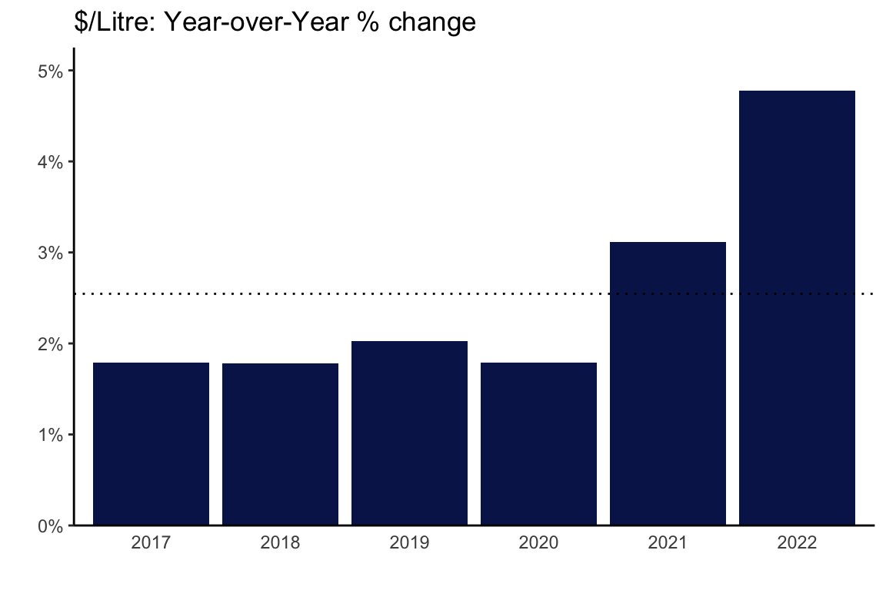
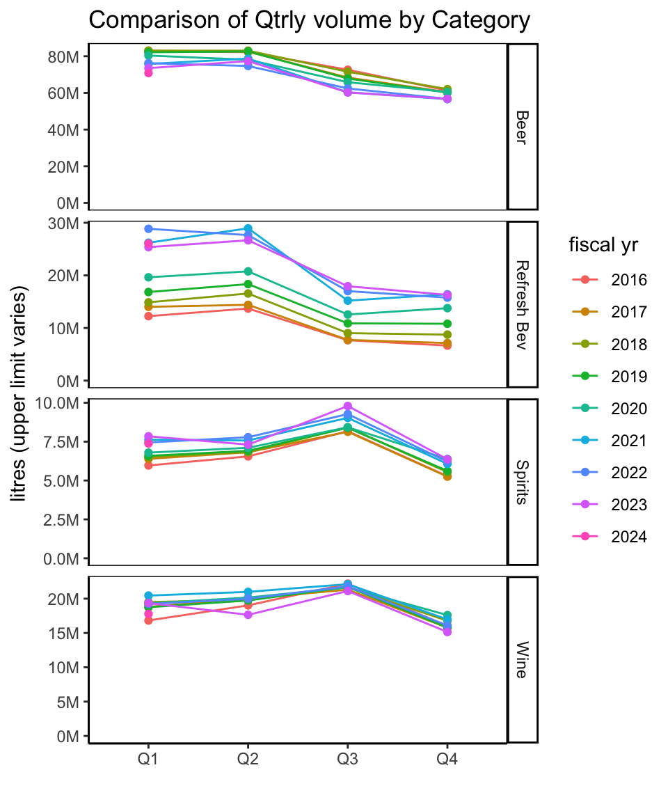
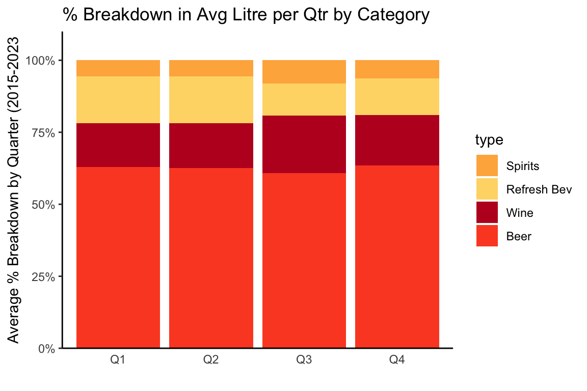

BC Liquor Sales Analysis: Quarter-of-Year Patterns 2015-2023
This is a continuation of a previous analysis of annual liquor sales in British Columbia, based on data from British Columbia Liquor Distribution Board ‘Liquor Market Review’. The Liquor Market Review is released on a quarterly basis, covering dollar and litre sales across major categories of beer, wine, spirits, and ‘refreshment beverages’ (ciders, coolers).
While the previous analysis compared year-over-year data, the focus here is on patterns in data based on quarter of year, such as typical peaks and valleys throughout the year, including differences by major beverage type.
Data goes back to 2015 (BC LDB Fiscal Year 2016, since fiscal yr ends in March).
As mentioned in previous article: my expertise is in data analysis, not the liquor industry, so the emphasis is on exploring what the data can tell us. Industry-insider context may be lacking. In the interest of promoting data analysis and learning, I am sharing most of the R code used to process the data - hence the expandable ‘Code’ options.
Stats by Quarter of the Year
Overview
We’ll start with an overview across all beverage types and then look at trends for beverage types further down below.
Code
# roll-up categories by qtr
trend_ttl_qtr <- lmr_data %>% group_by(year, fyr, fy_qtr, qtr) %>% summarize(
netsales=sum(netsales),
litres=sum(litres)
)
# calculate quarterly info
trend_qtr <- lmr_data %>% group_by(fy_qtr, start_qtr_dt, qtr) %>%
summarize(netsales=sum(netsales),
litres=sum(litres)
)
trend_qtr <- trend_qtr %>% ungroup() %>% mutate(
pc_chg_sales=netsales/lag(netsales)-1,
pc_chg_litres=litres/lag(litres)-1,
pc_chg_sales_qtr=netsales/lag(netsales, n=4),
pc_chg_litres_qtr=litres/lag(litres, n=4)
)
# averages
trend_qtrs <- trend_qtr %>% group_by(qtr) %>% summarize(
avgsales=mean(netsales),
avglitres=mean(litres),
avg_sales_pc_chg=mean(pc_chg_sales, na.rm=TRUE),
avg_litres_pc_chg=mean(pc_chg_litres, na.rm=TRUE)
)$ Sales
Overlay of $ sales data for quarter of each year to see overall trends:
- sales are mostly even in Q2 (Jul-Aug-Sep) and Q3 (Oct-Nov-Dec), covering most of the summer and the Christmas holiday season.
- Q4 (Jan-Feb-Mar) by far the slowest period.
Code
ch_title <- "$ Sales Comparison by Quarter (fiscal yr*)"
plot <- trend_ttl_qtr %>% ggplot(aes(x=qtr, y=netsales, color=factor(fyr), group=fyr))+
geom_line()+
geom_point()+
geom_line(data=trend_qtrs, aes(x=qtr, y=avgsales, group=1), color='black', size=1.5)+
scale_y_continuous(labels=label_comma(scale=1e-6, prefix="$", suffix="M"), expand=expansion(add=c(0,0.1)), limits=c(0,max(trend_ttl_qtr$netsales)))+
labs(title=ch_title, x="", y="Net $ Sales", color='fiscal yr')
ggplotly(plot)\\* BC LDB fiscal yr runs Apr - Mar, so Q1=Apr-May-Jun, and so on; black line = average.
The drop from Q3 to Q4 is the only consistent pattern across the years looked at. Relative level of sales between Q1, Q2, and Q3 can vary from year to year.
Looking at patterns in % change between quarters confirms that either ends of the fiscal yr have the biggest changes:
- Q4 has a consistently large drop from previous quarter and Q1 has consistently big increase from previous quarter.
- Q2 tends to show positive growth over Q1, but not always. Q3 straddles 0% change from previous.
Code
ch_title <- "Distribution of % Change in $ Sales Between Quarters"
plot <- trend_qtr %>% ggplot(aes(y=pc_chg_sales, x=qtr))+
geom_boxplot(fill=bar_col)+
scale_y_continuous(labels=percent_format())+
geom_hline(yintercept = 0, linetype='dotted')+
labs(title=ch_title, x="",y="% chg from prev quarter")
ggplotly(plot)The middle black line represents median for each quarter, with the colored area representing the range from 25% of the time to 75% of the time (1-3 quartiles).
Litres
Overlaying litres sold by quarter for each year shows volume changes throughout the year:
- Q2 (Jul-Aug-Sep) has highest sales, edging out Q1 (Apr-May-Jun)
- Q3 (Oct-Nov-Dec) sees drop, even with holidays, and then lower again for Q4 (Jan-Feb-Mar)
Code
ch_title <- "Litres Comparison by Quarter (fiscal yr*)"
plot <- trend_ttl_qtr %>% ggplot(aes(x=qtr, y=litres, color=factor(fyr), group=fyr))+
geom_line()+
geom_point()+
geom_line(data=trend_qtrs, aes(x=qtr, y=avglitres, group=1), color='black', size=1.5)+
scale_y_continuous(labels=label_comma(scale=1e-6, suffix="M"), expand=expansion(add=c(0,0.1)), limits=c(0,max(trend_ttl_qtr$litres)))+
labs(title=ch_title, x="", y="litres", color='fiscal yr')
ggplotly(plot)\\* BC LDB fiscal yr runs Apr - Mar.
The different pattern compared to $ sales likely represents the shift in drinking habits with the seasons:
- peak volume is in Q2 - beer season, and beer, along with refreshment beverages, are consumer in higher volumes than the other types.
- Q3, which is usually even with Q2 in $ sales, has a consistent drop in volume compared to Q2, due to shift away from beer/refreshments beverages toward wine and spirits.
Patters by beverage type are looked at more below.
Percentage changes from one quarter to the next reflect the different quarter-by-quarter patterns for litres.
Code
ch_title <- "Distribution of % Change in Litres Between Quarters"
plot <- trend_qtr %>% ggplot(aes(y=pc_chg_litres, x=qtr))+
geom_boxplot(fill=bar_col)+
scale_y_continuous(labels=percent_format())+
geom_hline(yintercept = 0, linetype='dotted')+
labs(title=ch_title, x="",y="% chg from prev quarter")
ggplotly(plot)- Q1 (Apr-May-Jun) typically has around 35% increase over previous Q4
- Q2 (Jul-Aug-Sep) tends to be even or slight increase over Q1.
- Q3 (Oct-Nov-Dec) big drop around 15% range compared to Q2.
- Q4 (Jan-Feb-Mar) usually another ~15% from Q3 to Q4.
By Major Beverage Type
Let’s look at beverage types to see what is going on below the surface of overall trends.
Code
# quarters at cat_type level
trend_qtr_cat <- lmr_data %>% group_by(year, fyr, fy_qtr, start_qtr_dt, qtr, type) %>%
summarize(netsales=sum(netsales),
litres=sum(litres)
)
trend_qtr_cat$type <- as.factor(trend_qtr_cat$type)
trend_qtrs_cat <- trend_qtr_cat %>% group_by(qtr, type) %>%
summarize(
avg_netsales=mean(netsales),
avg_litres=mean(litres),
max_litres=max(litres)
)
trend_qtrs_cat$type <- as.factor(trend_qtrs_cat$type)$ Sales
Looking at quarter sales by beverage type reveals patterns we suspected earlier:
- Beer and refreshment beverages tend to peak in Q2 and decline in Q3 and Q4.
- Wine and, especially, spirits peak in Q3 and offset the decline in beer and refreshment beverages.
Code
ch_title <- "Comparison of Qtrly $ Sales by Beverage Type"
trend_qtr_cat %>% ggplot(aes(x=qtr, y=netsales, color=factor(fyr), group=fyr))+
geom_line()+
geom_point()+
geom_line(data=trend_qtrs_cat, aes(x=qtr, y=avg_netsales), color='black', group=1, size=1.2)+
facet_grid(type~., scales='free_y')+
scale_y_continuous(labels=label_comma(scale=1e-6, prefix="$", suffix="M"),
limits=c(0,NA))+
labs(title=ch_title, x="", color="fiscal yr", y="$ Sales (upper limit varies)")+theme(panel.border = element_rect(fill=NA))
Stacked chart highlights the shifts between Q2 and Q3:
- decline in $ sales of Beer and Refreshment Beverages in Q3 almost completely offset by increase in wine and spirits.
Code
trend_qtrs_cat$type <- fct_reorder(trend_qtrs_cat$type, trend_qtrs_cat$avg_netsales)
ch_title <- "Breakdown in $ Sales per Qtr by Category"
plot <- trend_qtrs_cat %>% ggplot(aes(x=qtr, y=avg_netsales, fill=type))+
#geom_col(position='fill')+
geom_col()+
scale_y_continuous(labels=label_comma(scale=1e-6, prefix="$", suffix="M"), expand=expansion(add=c(0,0.1)))+
scale_fill_manual(values=type_color)+
labs(title=ch_title, x="",y="Average Net Sales in Qtr (2015-2023)")+
theme(axis.ticks.x = element_blank())
ggplotly(plot)Litres
Similar quarter-over-quarter patterns can be seen when looking at litres sold, although the overall differences from one quarter to the next - especially Q2 to Q3 - are larger when measured in litres, since Beer and Refreshment Beverages are consumed in larger quantities than Wine and Spirits.
Code
ch_title <- "Comparison of Qtrly volume by Category"
trend_qtr_cat %>% ggplot(aes(x=qtr, y=litres, color=factor(fyr), group=fyr))+
geom_line()+
geom_point()+
facet_grid(type~., scales='free_y')+
scale_y_continuous(labels=label_comma(scale=1e-6, suffix="M"),
limits=c(0,NA))+
labs(title=ch_title, x="", color="fiscal yr", y="litres (upper limit varies)")+theme(panel.border = element_rect(fill=NA))
Code
#+ theme(panel.border = element_line())- Beer and, even more-so, refreshment beverages drop from Q1-Q2 (Apr-Sep) to Q3-Q4 (Oct-Mar).
- Wine, Spirits have small peak in Q3 (Oct-Dec) - holiday season.
This pattern shows up clearly when looking at the average % breakdown in litres by beverage type:
Code
trend_qtrs_cat$type <- fct_reorder(trend_qtrs_cat$type, trend_qtrs_cat$avg_litres)
ch_title <- "Breakdown in Avg Litre per Qtr by Category"
trend_qtrs_cat %>% ggplot(aes(x=qtr, y=avg_litres, fill=type))+
geom_col(position='fill')+
scale_y_continuous(labels=percent_format(), expand=expansion(mult = c(0,0.1)))+
scale_fill_manual(values=type_color)+
labs(title=ch_title, x="",y="Average % Breakdown by Quarter (2015-2023")+
theme(axis.ticks.x = element_blank())
The bulge in % share for Wine and Spirits in Q3 (Sep-Dec), at the expense of Beer and Refreshment Beverages, is apparent.
Part 2 Wrap-up and Next Up
This concludes our look at quarter patterns, including quarters from mid-2015 to mid-2023.
Next-up:
- Category trends and patterns: closer look at each of the major beverage types, exploring categories and sub-categories within them, as reported in the Liquor Market Review.
- Category 1: Beer: start with beer, because…beer. ;)
Footnotes
Notes on ‘net $ sales’:
- the report says “Net dollar value is based on the price paid by the customer and excludes any applicable taxes.”
- calculating average net dollar value per litre for beverage categories gives unrealistically low numbers compared to retail prices in BC liquor stores. (Beer at average $4/litre? Not even the cheapest beer on the BC Liquor Stores website.)
- there is likely additional factors related to BC LDB pricing structure, wholesaling, etc.
- best to consider average net dollar value per litre referred to below as relative indicator.